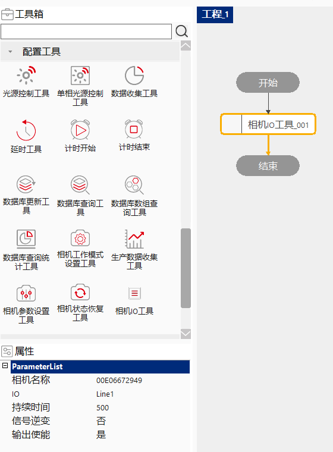

设置LBAS相机的输出通道参数。
相机IO工具是在使用LBAS相机时设置通道的参数，当相机到触发条件时会按照设定好的参数输出信号。
相机IO工具在填好相机名称后，在执行到这个工具的时候就可以对指定的通道设置信号持续时间、信号的逆变和是否输出信号。

先在相机管理中找到使用的相机，然后把相机的名称填写到“相机名称”，然后设置IO、持续时间、信号逆变、输出使能就可以了，在该工具执行的时候会按照工具属性中设置的参数对相机进行设置。
| 现象描述 | 解决方法 |
|---|---|
| 报错未找到指定相机 | 在相机管理中查看相机是否连接，如果连接看一下名称是否写错，如果没连接按照FAQ排查问题； |
| 参数名称 | 参数说明 |
|---|---|
| 相机名称 | 输入在相机管理中设置的相机的名称。 |
| IO | 选取要设置的通道，这里可以选取Line1和Line2。 |
| 持续时间 | 设置相机输出信号的持续时间，范围是[0,9999500],单位是微秒。 |
| 信号逆变 | 设置输出信号是否发生反转,默认输出是高电平，信号是低电平，逆变信号是true时，输出信号是高电平，当逆变设置是false时，输出信号是低电平。 |
| 输出使能 | 设置是否输出信号。 |
| 参数名称 | 参数说明 |
|---|---|
| 执行时间 | 该工具执行完 消耗的时间。 |
| 执行结果 | 该工具执行设置的结果 |
参见“\Samples\相机IO工具.gvp”。